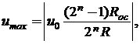

1.
СТРУКТУРА РЕЗИСТИВНЫХ МАТРИЦ ЦАП
При построении устройств, связывающих цифровое
устройство с объектами, использующими информацию в непрерывно изменяющейся
форме, требуется преобразование информации из аналоговой формы в цифровую и из цифровой в аналоговую. Устройство, осуществляющее автоматическое преобразование
непрерывно изменяющихся во времени аналоговых значений физической величины
(напряжения, тока) в эквивалентные значения числовых кодов, называют аналого-цифровым преобразователем (АЦП).
Устройство, осуществляющее автоматическое преобразование входных значений,
представленных числовыми кодами, в эквивалентные им значения какой-нибудь
физической величины (напряжения, тока и др.), называют цифроаналоговым преобразователем (ЦАП).
Итак, цифроаналоговый преобразователь предназначен для прямого преобразования входного двоичного кода, например, Аi(а2а1а0) в аналоговый эквивалент. Выходная аналоговая величина, обычно напряжение uвых, иногда нормированное uвых.н = uвых/uвых.max, соответствует кодовой комбинации Аi, поступившей на вход, и воспроизводится для дискретных моментов времени (рис. 35.1, а). Сменяющиеся входные цифровые коды обуславливают сменяющееся ступенчатое напряжение на выходе (L - идеальная передаточная характеристика ЦАП).
Существует два широко распространенных способа цифроаналогового преобразования с использованием:
· резистивной матрицы с весовыми двоично-взвешенными сопротивлениями;
· резистивной матрицы с двумя номиналами сопротивлений, которую обычно называют матрицей R–2R.
ЦАП с весовыми двоично-взвешенными сопротивлениями (рис. 35.1, б) состоит: из п переключателей Si (по одному на каждый разряд), управляемых двоичным кодом Аi; из матрицы двоично-взвешенных резисторов с сопротивлениями 2п-1R; источника опорного напряжения u0 и выходного операционного усилителя ОУ, с помощью которого суммируются токи, протекающие через резисторы с двоично-взвешенными сопротивлениями, для получения аналогового выходного напряжения uвых.
Каждый i-й разряд управляет переключателем Si, который подключается к источнику опорного напряжения u0, когда аi = 1, или к общей шине, когда аi = 0. Сопротивления резисторов 2n-1R (п – номер разряда входного кода), соединенных с ключами, таковы, что обеспечивают пропорциональность в них тока двоичному весу соответствующего разряда входного кода. Следовательно, ток на входе ОУ и выходное напряжение ЦАП:
Напряжение на выходе ЦАП пропорционально "весу" присутствующего на входах кода, а максимальное значение имеет место, когда все разряды примут значение 1, т. е.

и оно
всегда меньше опорного напряжения на
шаг квантования uoRос/(2nR).
Номиналы сопротивлений резисторов в младшем и старшем разрядах отличаются в 2п-1 раз и должны быть выдержаны с высокой точностью. Например, для 12-разрядного ЦАП использование в старшем разряде резистора с сопротивлением 10 кОм потребует включения в младший разряд преобразователя резистора с сопротивлением порядка 20 МОм. Широкий набор номиналов резисторов и требования их высокой точности, в особенности при значительном числе разрядов п входного кода, создают трудности при реализации ЦАП посредством интегральной технологии.
Во второй схеме ЦАП с матрицей R-2R
используют резисторы с двумя
номиналами сопротивлений, причём резисторы с сопротивлением R включены
в каждый разряд (см. рис. 35.2 при п = 3). Однако в этой схеме увеличиваются значения
паразитных ёмкостей.
Принцип функционирования схемы основан на свойстве резистивного делителя R-2R сохранять постоянное сопротивление нагрузки для источника опорного напряжения при замыкании ключей. Вследствие этого на выводах резистора R, начиная со старшего п - 1 разряда, опорное напряжение последовательно делится пополам, как и входящий в каждый узел матрицы ток. При этом напряжение на выходе преобразователя с матрицей R–2R:
Таким образом, выходное напряжение ЦАП пропорционально сумме напряжений со своими весами, обусловленными переключателями, подключенными к источнику опорного напряжения u0.
Недостатком ЦАП с матрицей R–2R является сильное влияние на точность преобразования нестабильности сопротивлений переключателей в замкнутом состоянии, что снижает временную и температурную стабильность характеристик ЦАП. Этот недостаток в значительной степени удаётся устранить в схемах код-напряжение, выполненных на базе полупроводниковой технологии с использованием тонкоплёночных резисторов на кристалле и переключателей на КМДП-транзисторах, в которых нелинейность от ±0,8% до ±0,003% от опорного напряжения uо, время установления тока от 5 мкс до десятых долей микросекунд и менее, часто выходной диапазон напряжения ±5 В. Опорное напряжение в схемах ЦАП может выбираться разной полярности или двуполярным.